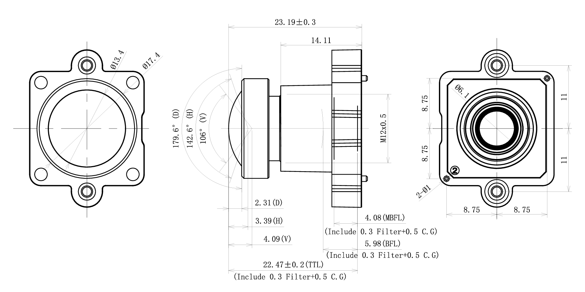

定焦鏡頭 2D 尺寸與機構參數
這張圖結合了定焦鏡頭的三視圖：可對應畫面的左側為鏡頭正視圖，中間為側視與光軸剖面，右側為底座俯視圖。
點選圖中的數字圓點，可查看尺寸來源、設計用途與常見誤區。

藍：視場與光學
橘：長度與後焦
綠：機構與座體
常用機構參數對照表
| 參數 | 圖面數據 | 機構或光學意義 |
|---|---|---|
| 視場角 FOV | 179.6° D / 142.6° H / 106° V | 決定影像可拍攝範圍與魚眼畸變程度。 |
| 入瞳深度 | 2.31 / 3.39 / 4.09 mm | 決定不同視角光線匯聚位置，設計外殼開孔時需要避讓光錐。 |
| 模組總機械長度 | 23.19 ±0.3 mm | 前端鏡片頂點到鏡頭座底部貼合面的整體高度。 |
| TTL | 22.47 ±0.2 mm | 從前端鏡片頂點到 CMOS 感光表面的光學總軌跡長度。 |
| BFL | 5.98 mm | 最後一片鏡片表面到 CMOS 感光表面的光學後焦。 |
| MBFL | 4.08 mm | 鏡頭本體尾端到 CMOS 感光表面的機械安全距離。 |
| M12 鏡頭螺紋 | M12 × 0.5 | 鏡筒與鏡頭座的標準細牙介面，組裝前後可旋轉調焦。 |
| 底座尺寸 | 17.5 × 17.5 mm | 由中心向四方各延伸 8.75 mm，供 PCB、外殼與定位使用。 |
| 固定螺絲孔距 | 11 mm、總孔距 22 mm | 鏡頭座上下固定耳的孔中心距光學中心尺寸。 |
| 定位柱 | 2-Ø1 mm | 底座對角配置兩根定位柱，插入 PCB 定位孔以防止歪斜。 |
| 通光孔 | Ø6.1 mm | 鏡頭座底部允許光線穿過的最大有效圓孔。 |
從參數到 3D 檔案設計的使用方式
1. 先確認光軸與 Sensor 位置
光軸對基準：圖面十字線的交點為光學中心。PCB 感光區、鏡頭座通孔與鏡筒螺紋應共同對準此中心。
2. 再確認後焦與板厚
可靠依據：BFL 及 MBFL 表示 Sensor 與鏡頭間的距離。若 PCB、IR-Cut 或 Cover Glass 造成光學厚度變化，須依 0.3 / 0.5 mm 補償註記核算。
3. 設計外殼前端開孔
避光錐：不要只依最大直徑開孔。應根據入瞳深度與不同方向 FOV 繪製通光錐，避免外殼內壁遮住廣角畫面。
4. 設計底座固定與定位孔
防止組裝偏移：依 17.5 × 17.5 mm 方框、11 mm孔距、2-Ø1 定位柱與 Ø6.1 通孔建立 2D 草圖，再投影至機構外殼和 PCB。